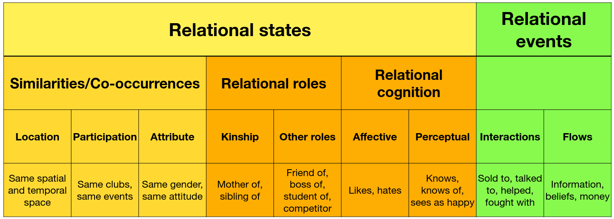
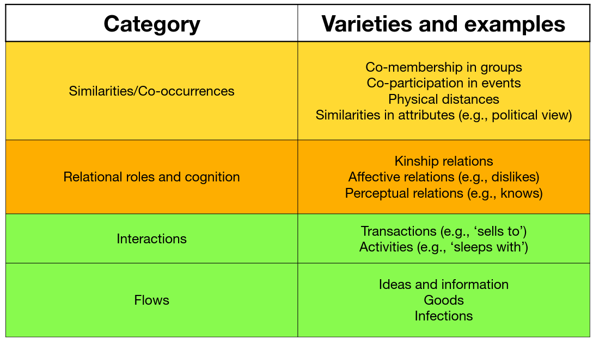

Elements of Network Analysis Research
The whole network analysis works using graph theory, but we can classify the type of analysis based on:
- Network research design:
- Whole network: we study the set of ties among all pairs of nodes in a given set
- Personal network: we study a set of nodes called "egos" and their ties to others, called "alters" (not necessarily among the set of egos). Personal-network designs have the advantage of simplifying the gathering and management of the network.
- Data source:
- primary: the researcher collects the data first-hand, e.g., by asking questions to or observing the behavior of the interviewees, from a survey, probing a (computer) network or applying other kinds of first-hand measures on the focused network.
- secondary: the researcher gathers data that already exists somewhere, whether in paper records, or electronic databases
Types of nodes and types of edges
When ties are co-occurrences, they relate nodes of different types. Relational roles or relational cognition ties represent relational states of continuous nature between nodes of the same type. Relational roles are often institutionalised (e.g., being married) and can be collected from sources other than the nodes directly involved (e.g., community, family members, archival records). Relational cognition ties are a perception of the individuals and do not have an independent existence. Interactions can be either directly observed or reported on by respondents. Although interactions are often directly observable, there are always issues of interpretation. When surveying interactions, the higher the level of abstraction, the more theoretically useful the data is likely to be.


Grouping techniques
It is often non-trivial to define a set of boundaries of the network we are analyzing. Here are some useful techniques we can employ:
- Snowballing is a technique for group discovery where sampled individuals recruit new subjects from among their “ties”. This sampling technique is often used in hidden populations that are difficult for the researcher to access. However, snowball samples are subject to numerous biases.
- Nominalist and realist criteria, respectively called also “etic” and “emic” criteria, help in determining the members of the studied group. The term “etic” indicates a universal (nominalist) objective, a third-person criterium that classifies individuals. The term “emic” indicates the recognition (realist) of belonging in a group—either by its members or by a set of ideologies and behaviours recognised as characteristics by the members of the group.